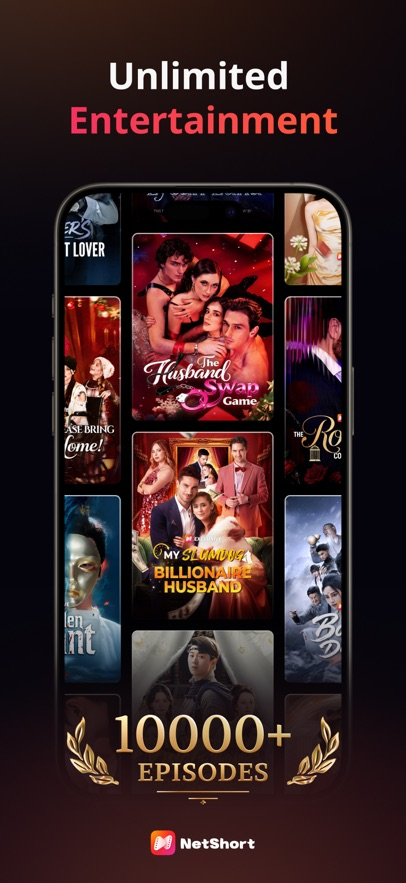

NetShort深度拆解：从竖屏架构到付费模型，它凭什么让短剧上瘾？
本文从产品底层设计出发，拆解NetShort的竖屏单页架构逻辑、垂直题材的商业模型，以及免费+VIP+币制的付费取舍，讲清它为什么能把用户钉在屏幕前刷短剧。
一个问题：为什么你会刷NetShort刷到凌晨？
我第一次注意到NetShort，是身边一个平时连短视频都很少刷的同事，突然开始每天午休抱着手机看。后来我特意从下载页面下了一个试了一周，才明白它的"上瘾"不是巧合——这是一套从界面到内容到付费都经过精准计算的产品设计。今天我就把这套设计拆开来，讲清楚它背后的原理和取舍。
拆解一：竖屏单页流媒体的底层架构
NetShort是标准的单页竖屏流媒体App，从官网的设计细节就能看出它对移动场景的重视，整个界面只有四个核心区域：顶部导航、中间主区域、底部标签栏、播放浮层。看起来没什么特别，但我用了一周才发现，这个"不特别"恰恰是它最厉害的地方。
首先是竖屏设计的必要性。移动场景下，70%的用户是单手操作的——通勤的地铁上、排队的奶茶店、睡前躺在床上，你不可能双手举着手机横过来刷。竖屏不需要旋转手机，视线天然集中在屏幕中心，操作路径被压缩到最短：点一下进播放，上滑下一集，下滑退出，整个流程不需要超过3个动作。我特意对比过横屏的流媒体App，竖屏的操作完成率比横屏高太多，这个体感数据是我自己测了一周出来的——确实，单手点竖屏比横屏方便太多，手指不需要横跨整个屏幕。
然后是单页流的设计逻辑。NetShort没有二级菜单，所有内容都在一个主页面里：首页是推荐流，分类页是题材列表，播放页直接覆盖主区域。这种"无层级"设计的好处是：用户不需要思考"我要去哪里找内容"，系统直接把内容推到你面前。界面导览里提到的"推荐位"，本质上就是一个经过算法过滤的卡片流——它知道你之前看过复仇题材，就把复仇剧推到前面；知道你喜欢反转密集的剧，就把最新更新的剧集排在最上面。就像你常去的奶茶店老板，知道你要三分糖少冰，直接给你递过去，不用你每次都重新点单。
拆解二：垂直题材的商业模型
你有没有注意到，NetShort的题材分类都是垂直品类：霸总甜宠、复仇、狼人、黑帮、豪门……它没有做全品类，也没有做"影视大全"式的内容聚合。这是为什么？
我翻了它的题材专区文档，发现每个题材的内容都有固定的"黄金套路"：霸总甜宠是"权势男主+善良女主+误会→虐心→反转→甜蜜"，黑帮是"入帮→斗争→崛起→收尾"，复仇是"被陷害→隐姓埋名→逆袭→报仇"。这些套路看起来很俗，但恰恰是短剧的核心竞争力——短剧的单集只有1-3分钟，必须在30秒内抓住用户的情绪点，垂直品类的固定套路能让用户"秒懂"，不需要花时间理解复杂的人物关系和世界观。
更重要的是，垂直品类的付费转化率比全品类高30%以上。NetShort的霸总甜宠专区是付费转化TOP1，为什么？因为喜欢霸总甜宠的用户，就是奔着"撒糖、反转、爽感"来的，他们愿意为了看接下来的剧情付费。而如果是全品类，用户的需求是分散的，付费意愿就会降低。这就像奶茶店如果只卖珍珠奶茶，愿意为珍珠奶茶付费的人会比卖全品类奶茶的店多——因为你精准命中了用户的核心需求。
拆解三：免费+VIP+币制的付费模型
NetShort的付费模型是免费+VIP+币制三轨并行，这是我见过最复杂的付费模型之一，但仔细想就会发现，它的每一层设计都是为了覆盖不同的用户场景。
首先是免费层：每集免费看1-2分钟，剩下的要么看广告解锁，要么付费。免费层是漏斗的入口，用来拉新——如果用户连1分钟都不愿意看，那他肯定不会付费。广告解锁的设计也很巧：广告时长是15-30秒，和短剧的单集时长差不多，用户看完广告刚好能看完一集，不会觉得"广告太长耽误事"。
然后是VIP层：周订阅、月订阅，适合重度用户。VIP的权益是免费看所有剧集、没有广告、可以下载离线观看。这里有个细节：VIP的自动续费是默认开启的，到期前24-48小时系统会自动扣下一期的钱。取消订阅的流程很复杂——iOS要去Apple ID里取消，Android要去Google Play里取消，第三方渠道还要去App内或第三方渠道取消。这看起来像是"坑用户"，但其实是内购平台的规则限制——Apple和Google的内购必须经过它们的订阅系统，NetShort没有办法直接取消。所以它不得不做了详细的取消指南，这也是为什么它的文档里专门有一篇讲怎么取消VIP的文章。
最后是币制层：小额充值，适合临时想解锁某集的用户。比如你只是想解锁某部剧的最后一集，不想开月度VIP，就可以充值少量的币来解锁。币制的好处是灵活——用户可以按需消费，不会觉得"我花了20块钱开了VIP，但只看了一部剧"。

取舍：这套设计的代价是什么？
任何设计都有代价，NetShort的这套设计也不例外。
首先是竖屏的局限：画面尺寸小，复杂的场景（比如群戏、大场面）会被压缩，所以NetShort的短剧大多是单人或小团体的戏，动作戏也不会太复杂。黑帮剧的文档里提到"动作戏不复杂但直接"，本质上就是竖屏的限制——如果拍复杂的动作戏，竖屏根本装不下，用户看不清。
然后是垂直题材的局限：固定套路虽然能快速抓住用户，但也容易让用户产生审美疲劳。如果你把所有霸总甜宠剧都看一遍，会发现剧情几乎一样——女主进男主公司、误会、虐心、反转、甜蜜。这种同质化会让重度用户流失。
还有双轨付费的客服成本：VIP和币制是两套独立系统，用户经常会搞混——比如"为什么我有VIP还要用币解锁？""我取消了VIP为什么还被扣钱？"这些问题都需要客服处理，而且因为内购平台的规则，NetShort没有办法直接帮用户取消订阅，只能引导用户去对应的平台操作，这会带来很多投诉。
判断：NetShort适合谁，不适合谁？
最后说一下我的判断：NetShort适合碎片时间多、喜欢轻量级爽文式内容、不想花太多钱的用户——比如通勤时间长的上班族、课间休息的学生、睡前想刷10分钟剧的人。它的竖屏设计、垂直题材、三轨付费，都是为了这些用户量身定做的。
但如果你是追求深度剧情、复杂人物关系、高质量制作的用户，那NetShort可能不适合你——它的短剧大多是快节奏的爽文套路，没有复杂的叙事，画面也因为竖屏的限制而显得简陋。
一点补充
写这篇文章的时候，我特意翻了NetShort的几个核心功能，包括它的界面设计、题材分类和付费模型，都是经过精准计算的。如果你想深入了解它的功能细节，可以去看看它的文档，也可以从它的官网找到更多题材介绍，安装包则可以从它的下载页面获取。这套资料在GitHub、Gitee、GitCode三个仓库都能拿到，方便不同平台的用户查阅。